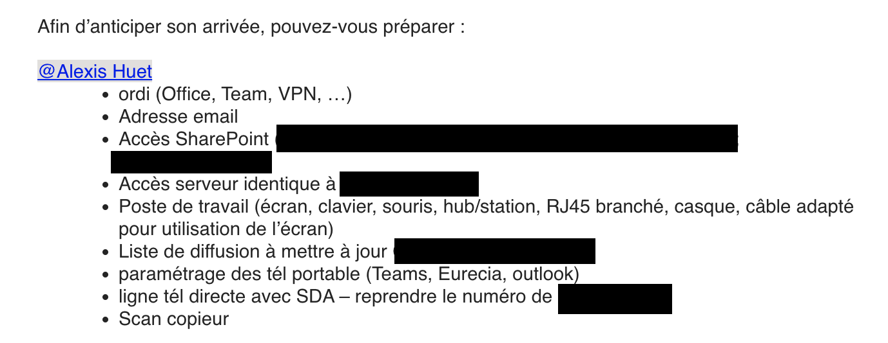
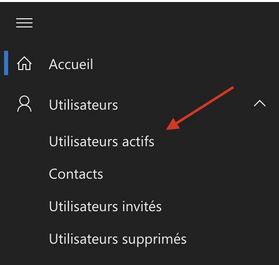
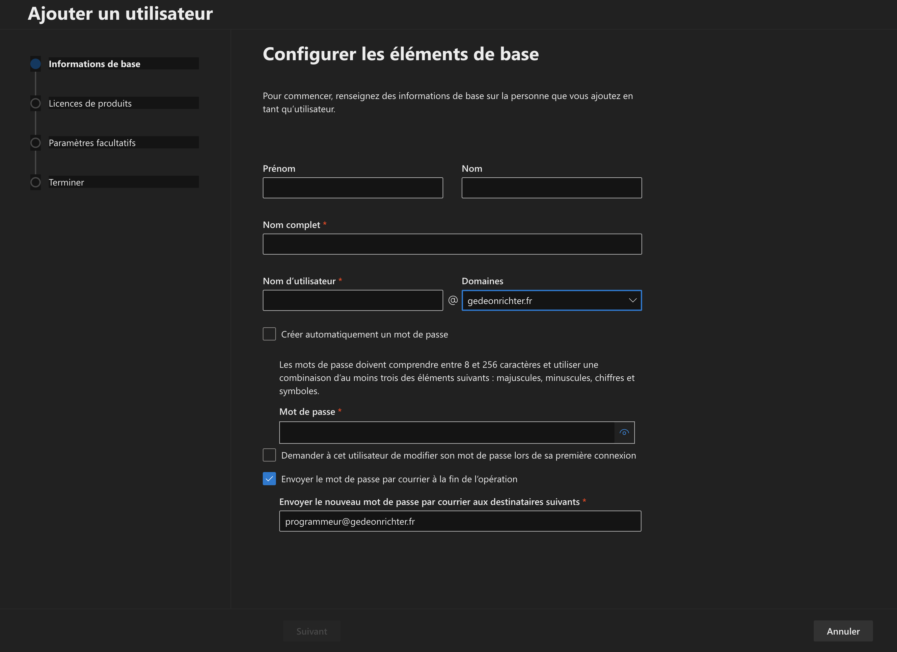
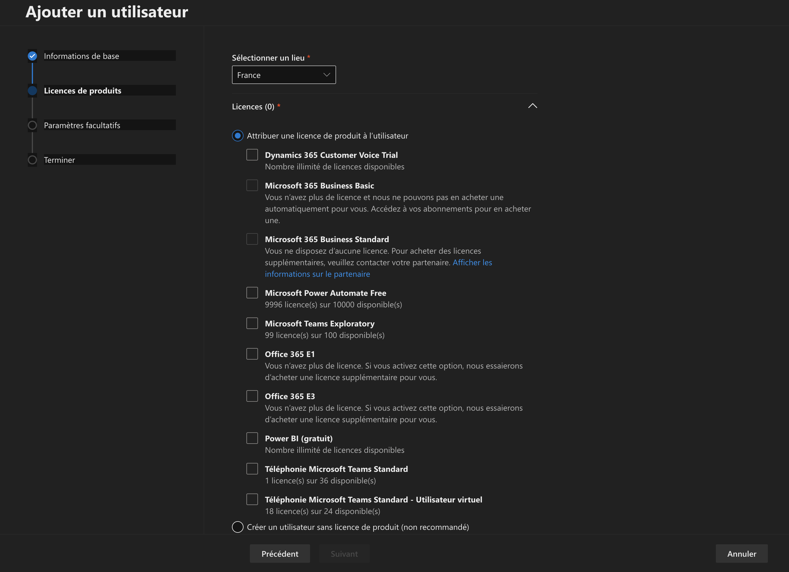
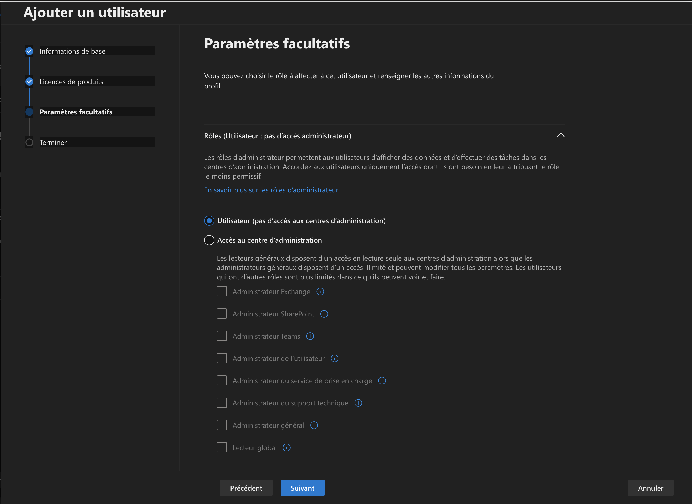
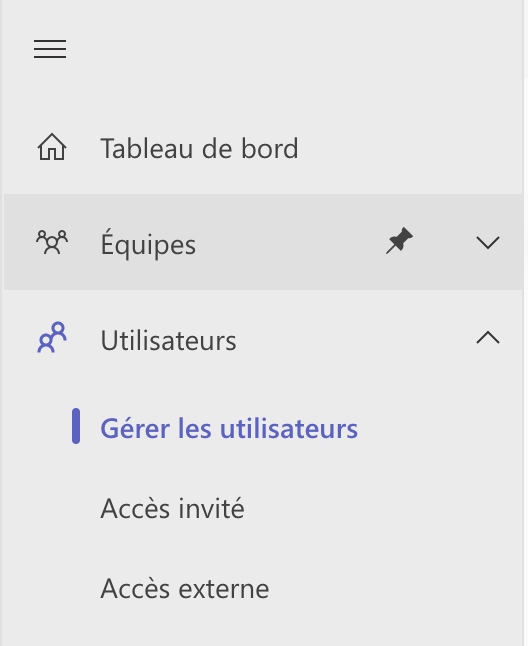
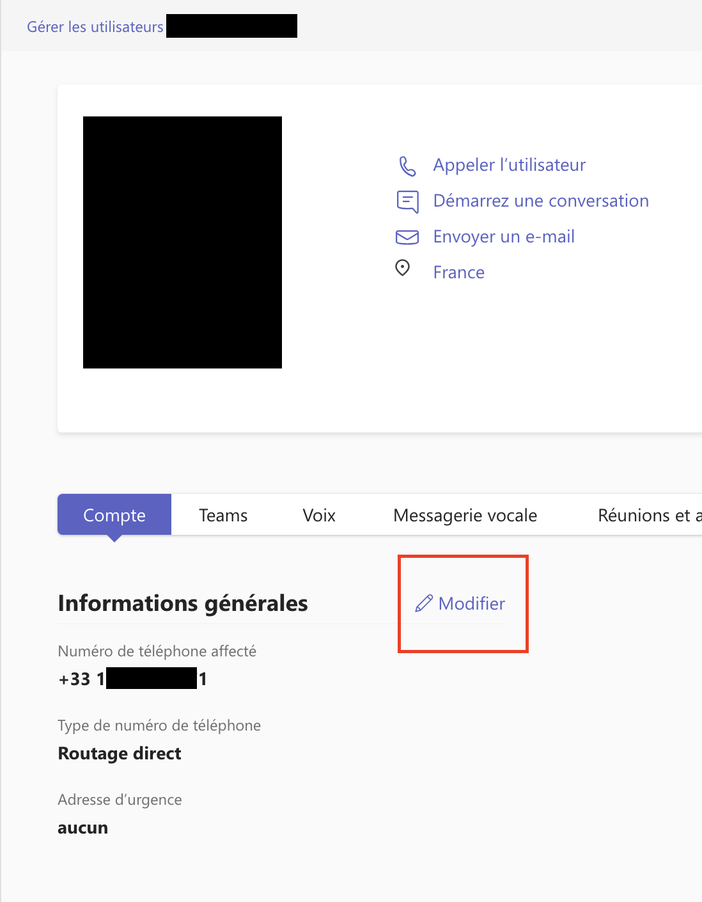
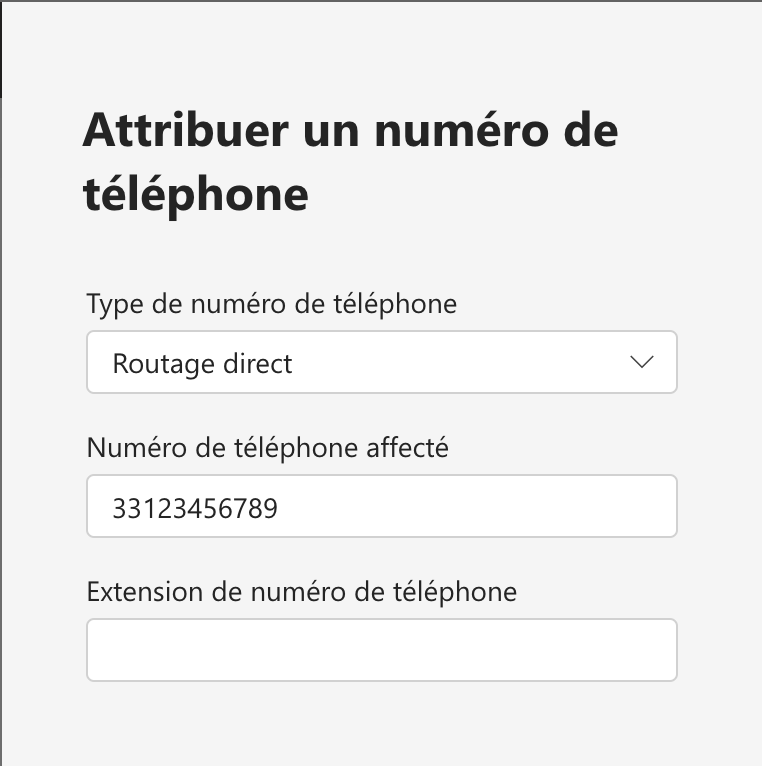

Administration OFFICE 365
- Création de compte office 365
- Rajout d'utilisateurs à des groupes SharePoint
- Supprimer des utilisateurs
- Créer des groupes SharePoint
- Créer des sites SharePoint
- Attribué les numéros de téléphone Teams
- Restriction de mail utilisateur
Mes missions :
- Office 365
- SharePoint
- Teams
Les outils utilisés :
- Administration Office 365
- Administration SharePoint
- Administration Teams
- Mettre en place et vérifier les niveaux d’habilitation associés à un service
- Collecter, suivre et orienter des demandes
Les compétences acquises :
office 365
Office 365 est l'outil principale de l'organisation dans la quel je suis en poste. Il permet de gérer les mails, les fichiers, les groupes, les sites, les utilisateurs, les licences, les applications, les flux, les rapports, les paramètres, les alertes, les paramètres de sécurité, les paramètres de confidentialité, les paramètres de conformité, les paramètres de recherche, les paramètres de stockage, de l'entreprise. Il est donc important de savoir l'administrer.
Création de compte Office 365
Durant mon alternance , plusieurs collaborateurs ont rejoint l'entreprise pour laquel je suis missioné. Il a donc fallu créer des comptes Office 365 pour ces nouveaux collaborateurs. Pour cela avant tout arrivé de collaborateurs je reçoit un mail de la part de mon manager avec les informations de la personne qui va rejoindre l'entreprise.
Donc pour se faire je doit réaliser quelque étape clé sur sur l'admin Office 365
- Créer un compte Office 365
- Donner les accès aux SharePoint
- Attribuée un SDA (Téléphonie VoIP)
- Attribuée une licence Office 365
- Attribuée une licence Teams CallingPlan
- Mettre à jour la liste de diffusion
Je vais vous expliquer comment j'ai réaliser ces étapes.
Créer des comptes office 365 via le portail 365
Il faut se rendre sur le portail 365, puis dans la section "Utilisateurs actifs".
Ensuite, il faut cliquer sur "Ajouter un utilisateur".

Il faut ensuite remplir les champs demandés, puis cliquer sur "Envoyer un message électronique à l'utilisateur avec les informations de connexion".
- 
-
Durant cette etape ont saisi les informations utilisateurs nottament :
- - Prénom
- - Nom
- - Adresse mail
- - Le mot de passe (En respectant les reccommandations de la CNIL)
- 
-
Cette Etape consiste à l'ajout des licences
- - Licence Office 365
- - Licence Teams CallingPlan (Permet d'utiliser un numéro de téléphone dans Teams)
- - (Dans Certain cas elle permet aussi de retirer certains logiciel d'office365)
- 
-
Cette Etape consiste au autorisation administration spécifique
- - Autorisation d'administration Teams
- - Autorisation d'administration SharePoint
- - Autorisation d'administration Exchange
C'est une etape facultative
Rajouter des utilisateurs à des groupes SharePoint
Allez dans l'onglet d'Administration
Allez dans l'onglet "SharePoint"
Allez dans l'onglet "Utilisateurs actifs"
Allez dans l'onglet "Groupes"
Allez dans l'onglet "Groupes de site"
Allez dans l'onglet "Modifier les membres"
Choisissez les utilisateurs à rajouter
Validez
Attribué des numéros de téléphone Teams
- 
-
Cliquez sur Gérer les utilisateurs dans l'onglet Utilisateur dans le centre d'administration Teams
- 
-
Choisissez les utilisateurs à qui vous souhaitez attribuer un numéro de téléphone
Et cliquez sur modifier
- 
-
Rentrez le numéro de téléphone
Restreindre les droits utilisateurs
Allez dans l'onglet d'Administration
Allez dans l'onglet "Utilisateurs actifs"
Choisissez les utilisateurs à restreindre
Allez dans l'onglet "Modifier les rôles"
Choisissez les rôles à attribuer
Validez